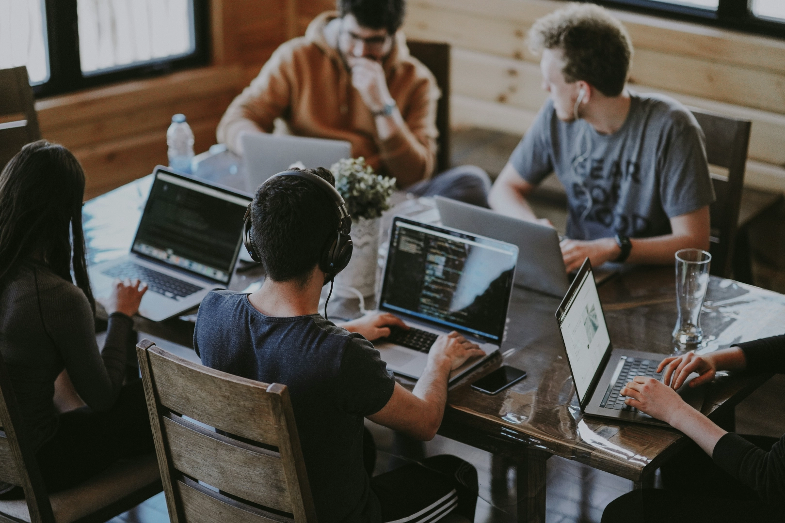
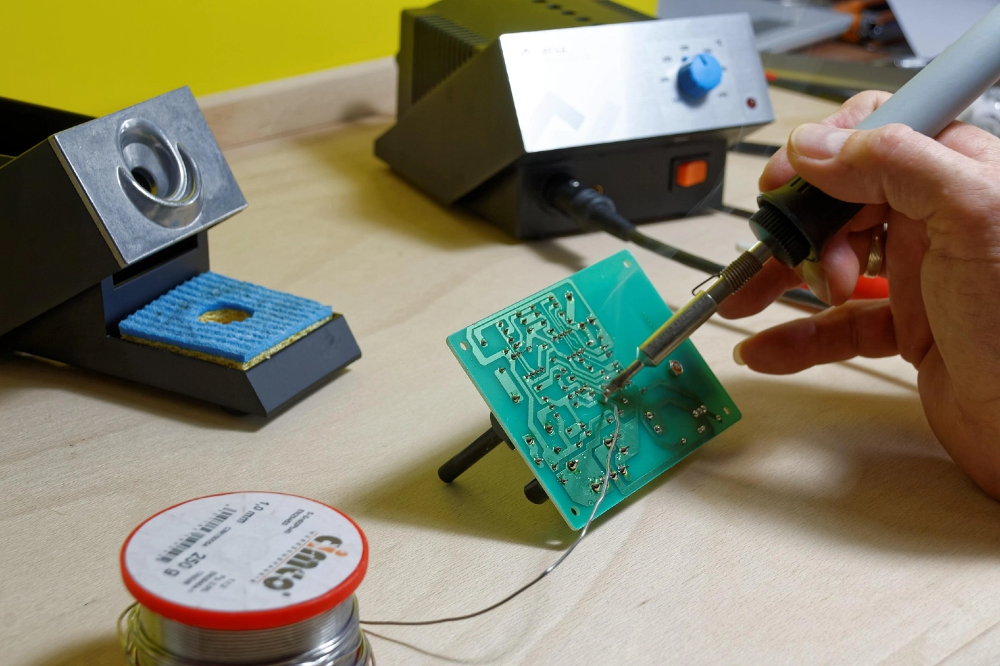

Jäsenyys ja Säännöt
Jäsenyys ja hinnat
Liity Merenranta Makers -yhteisöön ja anna luovuutesi kukkia! Jäsenyyden voi maksaa kuukausierissä tai koko vuoden kerrallaan.
Jäsenedut
- Kulkukortti, jolla pääset tiloihimme klo 8–22 joka päivä
- Kaikki Merenranta Makersin tilat ja työkalut käytettävissäsi
- Ilmainen pääsy tapahtumiimme
- Tekemisen ilo
Säännöt

Merenranta Makers on avoin ja kunnioittava yhteisö kaikille tekijöille taitotasosta riippumatta. Kohtelemme toisiamme, tiloja ja työkaluja arvostuksella. Jokainen jäsen on velvollinen pitämään yllä hyvää työskentelyrauhaa ja auttamaan tarvittaessa muita – yhdessä oppiminen on osa toimintaamme.
Turvallisuus ja laitteiden käyttö
Turvallisuus on ensisijaisen tärkeää. Laitteita saa käyttää vain niihin annetun perehdytyksen jälkeen. Käytä aina asianmukaisia suojavarusteita (kuten suojalaseja tai kuulosuojaimia) ja varmista, että purunpoisto on päällä puutöitä tehdessäsi. Jos havaitset laitevian, ilmoita siitä välittömästi, jotta voimme varmistaa tilan turvallisuuden kaikille.
Siisteys
Jokainen tekijä vastaa omien jälkiensä siivoamisesta. Työskentelypiste on puhdistettava ja työkalut palautettava omille paikoilleen heti käytön jälkeen. Muista, että puhdas ja järjestyksessä oleva paja on seuraavan käyttäjän etu – jätä tila siihen kuntoon, jossa toivoisit sen itse olevan saapuessasi, ellet jopa parempaan.
Jäsenyyden ehdot ja tilojen käyttö
- Kulkukortti: Henkilökohtainen, eikä sitä saa luovuttaa ulkopuolisille.
- Aukioloajat: Tilat ovat käytössä klo 8–22. Muina aikoina oleskelu on kielletty.
- Materiaalikustannukset: Paja tarjoaa perustarvikkeita (kuten ruuveja ja liimoja), mutta isommat projektimateriaalit jäsenet hankkivat itse.
- Vastuu: Jokainen jäsen on korvausvelvollinen, mikäli aiheuttaa vahinkoa laitteille huolimattomuudellaan tai sääntöjen vastaisella toiminnalla.
Asiakaspalautteet
"Todella hyvä työtila ja mukava yhteisö. Sain paljon apua omaan projektiini!"
– Mikko
"Paljon työkaluja ja mahdollisuuksia. Suosittelen kaikille, jotka haluavat tehdä projekteja."
– Laura
"Paras makerspace missä olen käynyt. Tulen varmasti uudestaan."
– Jari